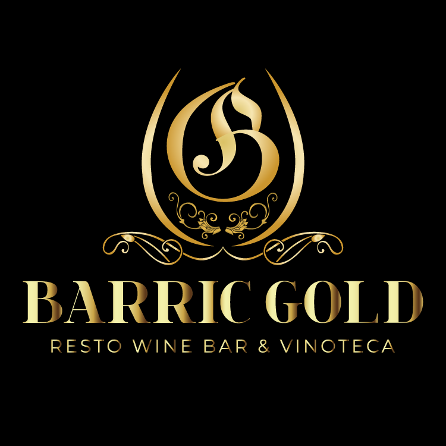

Vinito ♥
Home
Catalogo
CatalogoPremium
Nosotros
Preguntas

Home
Catalogo
CatalogoPremium
Nosotros
Preguntas
Vinito♥ es una cámara empresaria que nuclea a la mayoría de las principales bodegas de todo el país y a bodegas pequeñas y medianas, que conforman el 70% de los socios de la entidad. Fue creada en el año 2001 como resultado de la fusión del Centro de Bodegueros de Mendoza, con sede en Mendoza, fundado en el año 1935 y la Asociación Vitivinícola Argentina, con sede en Buenos Aires, fundada en el año 1904.
El objetivo de la fusión fue sentar las bases de una entidad que creciera y tuviera la mayor representatividad nacional como cámara empresaria vitivinícola. Ello se cumplió plenamente en el tiempo ya que las bodegas fundadoras de Bodegas de Argentina fueron sólo 62. Hoy los socios de Bodegas de Argentina son más de doscientas cincuenta (250) empresas de todas las zonas vitivinícolas del país. Hay socios en las Provincias de Salta, Catamarca, La Rioja, San Juan, Mendoza, Neuquén, Río Negro, Córdoba y Buenos Aires. Los Vice Presidentes Regionales designados en cada una de estas regiones, que forman parte del Directorio de Bodegas de Argentina, son el vínculo institucional con las mismas.
Las empresas asociadas a Vinito♥ fueron pioneras en el cambio tecnológico que tuvo su comienzo en la década del ’90 y que continúa actualmente. Fueron protagonistas de los cambios cualitativos que caracterizan a los vinos de hoy, y también, los que inicialmente trabajaron en la apertura de los mercados internacionales y en el desarrollo del turismo vitivinícola.
Nuestros socios participan con sus ventas en el mercado interno con el 60 % de lo que se consume en envases de cartón (tetra brik) y 85 % del vino que se vende en botella. En el mercado externo representan el 90 % de la exportación de vinos fraccionados.
Los socios son tanto tradicionales empresas vitivinícolas como la nueva generación de pequeñas empresas familiares. Entre ellos existen bodegas que pertenecen a familias fundadoras en nuestro sector, como así inversiones extranjeras, hay también grandes multinacionales y pymes vitivinícolas, sociedades anónimas y cooperativas. En resumen, es una clara muestra de la vitivinicultura de hoy.
Vinito♥ es miembro de distintas asociaciones ad hoc.
Además, representa los intereses de sus asociados ante diferentes organismos o instituciones tanto en el orden nacional como internacional.
Gracias a todos por elegirnos ♥♥♥♥♥